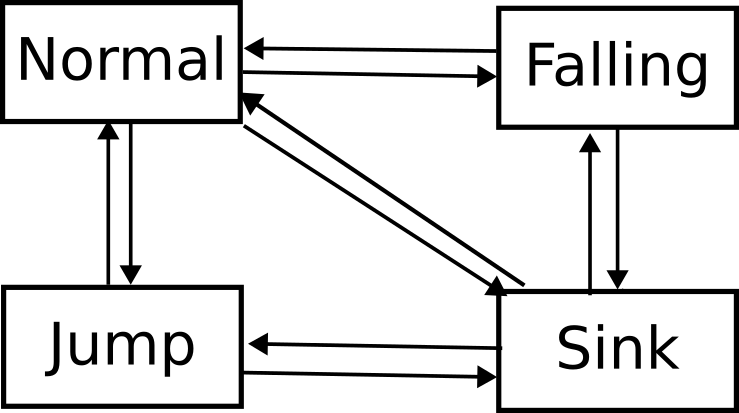

My player movement system has a main script which carries out player movement with most of the other things like players current speed and upwards velocity from a jump being appllied by the current state of the players statemachine script.
For example in the default state when the player is either still or moving on the ground, the player can either change state to the jump state if the player presses the jump button while grounded, to the falling state if the player leaves the ground or to the sink/swimming state if the player presses the 'sink' button.
extends PlayerState
func enter(values : Dictionary) -> void:
pass
func handle_input(event : InputEvent) -> void:
if event.is_action_pressed("MOVE_JUMP") && player.playerCollisionState.floor:
state_machine.transtion_to("PlayerJumpState", {})
func update(delta : float) -> void:
player.change_to_standup_model()
player.CurrentSpeed = player.SPEED_NORMAL
if not player.playerCollisionState.floor:
state_machine.transtion_to("PlayerFallingState", {})
if Input.is_action_pressed("MOVE_SINK"):
state_machine.transtion_to("PlayerSinkState", {})
return
func exit() -> void:
pass
For the players movement I was origianlly using the engines built in move_and_slide function from the CharacterBody3D node, but due to needing to implement the players abilty to climb up walls, I implemented my own custom solution.
A useful trick I used in this script is by using the dot product between 2 vectors to check if both of them are pointing in the same or opposite direction, for example using the dot product between the wall normal and velocity to check if the player is moving into the wall.
func player_move(var_velocity : Vector3, var_delta : float) -> void:
var first_slide : bool = true
var remaining_motion : Vector3 = var_velocity * var_delta
var previousCollisionState : CollisionState = CollisionState.new(false, false, false)
if climbing && remaining_motion.dot(wall_normal) > 0 && player_is_on_wall() && !player_is_on_floor():
remaining_motion.y = -remaining_motion.dot(wall_normal)
remaining_motion -= remaining_motion.dot(wall_normal) * wall_normal
previousCollisionState = CollisionState.new(playerCollisionState.floor, playerCollisionState.wall ,playerCollisionState.ceiling)
playerCollisionState = CollisionState.new(false,false,false)
for i in range(50):
var collision_result : KinematicCollision3D = move_and_collide(remaining_motion, false, 0.001, false, 6)
var collision : bool = (collision_result != null)
if collision:
playerCollisionState = CollisionState.new(false,false,false)
remaining_motion -= collision_result.get_travel()
var result_state : CollisionState = CollisionState.new(false, false, false)
set_collision_direction(collision_result, result_state, CollisionState.new(true, true, true))
if playerCollisionState.floor:
if remaining_motion.dot(-up_direction) > 0 && floor_normal.is_equal_approx(up_direction):
remaining_motion -= remaining_motion.dot(-up_direction) * -up_direction
if remaining_motion.dot(-floor_normal) > 0:
remaining_motion -= remaining_motion.dot(-floor_normal) * -floor_normal
if playerCollisionState.wall && remaining_motion.dot(-wall_normal) > 0:
if climbing && first_slide:
remaining_motion.y = remaining_motion.dot(-wall_normal)
remaining_motion -= remaining_motion.dot(-wall_normal) * -wall_normal
print(remaining_motion)
first_slide = false
continue
else:
remaining_motion -= remaining_motion.dot(-wall_normal) * -wall_normal
if playerCollisionState.ceiling:
remaining_motion -= remaining_motion.dot(-ceiling_normal) * -ceiling_normal
_snap_on_floor(previousCollisionState.floor, velocity.dot(up_direction) > 0)
else:
remaining_motion = Vector3.ZERO
if(remaining_motion.is_zero_approx()):
break
if playerCollisionState.floor && !(velocity.dot(up_direction) > 0):
velocity = velocity.slide(floor_normal) + 1 * -floor_normal
if climbing && previousCollisionState.wall:
player_apply_wall_snap()